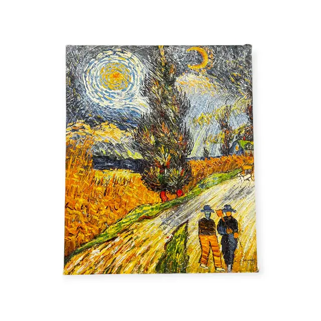
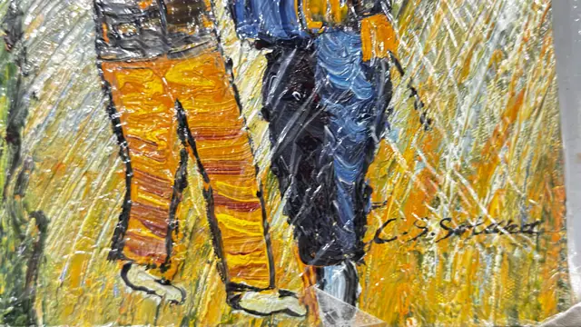

Paintings & Prints
Impasto Night Road with Cypress and Star, Signed, Unframed
· late 20th to early 21st century
Price Upon Request


About the Item
A thickly loaded impasto canvas after Van Gogh's road with cypress: a dark green cypress twists up the centre of the picture, flanked by a huge swirling white and yellow star at the upper left and a small crescent moon at the upper right. Golden wheat fields press in from both sides in slabs of orange, chrome yellow and green, and a pale road sweeps down to the foreground where two small figures in blue and ochre walk towards the viewer. The paint is applied in ridges several millimetres proud of the surface, catching the light along every stroke. The canvas is gallery-wrapped with the image continued over the edges and is unframed. Medium: oil on canvas. Signed lower right of the canvas. Condition: Paint surface intact with pronounced impasto ridges; no cracking, flaking or losses visible. Canvas edges clean.
Details
- Creation Year:
- late 20th to early 21st century
- Dimensions:
- Height: 24.2 in (61.47 cm)
Width: 20.0 in (50.8 cm)
canvas - Medium:
- oil on canvas
- Period:
- 21St
- Condition:
- Offered in the condition shown in the photographs.
- Reference Number:
- VO-50
- Documentation:
- No certificate photographed.